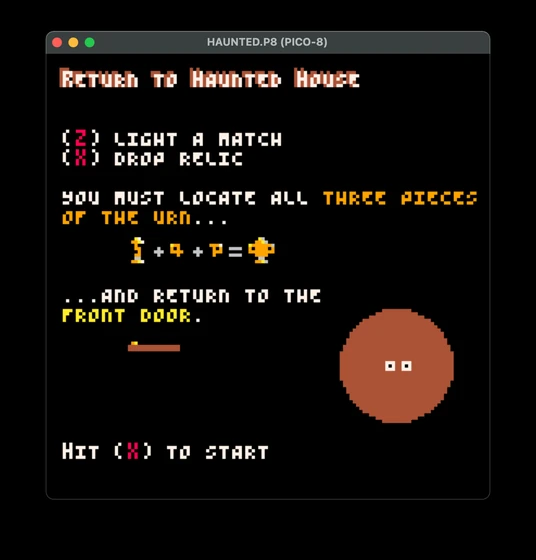
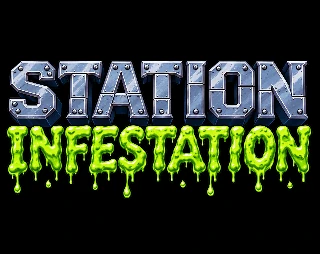
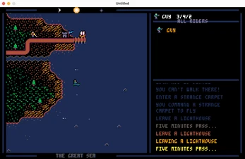
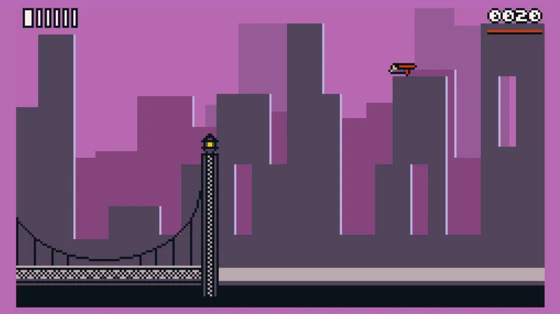
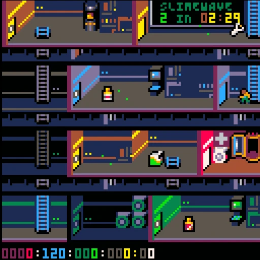

Return to Haunted House
Strike a match, find the three pieces of the magic urn, and get out before you run out of lives. The crystal ball can reveal the floor or draw the ghost of Zachary Graves.
Play on itch.ioLight a match in a haunted mansion, call in a repair bot on a slime-infested space station, or sail out from a lonely lighthouse.
A slime outbreak is tearing through the station. Patch broken panels, clear the infestation, and keep Floyd, your robot sidekick, charged long enough to help.


Strike a match, find the three pieces of the magic urn, and get out before you run out of lives. The crystal ball can reveal the floor or draw the ghost of Zachary Graves.
Play on itch.io
Take up a post at Stormbane Lighthouse in a 16-color adventure inspired by Ultima IV–VI. Sail skiffs and frigates, or take to the air on a flying carpet.
Play the demo
Duck into a phone booth, take to the skies over Cosmopolis, and haul Luth Lexor’s henchmen to jail. Put the bridge back together before you return to your day job.
Play on itch.io
Survive three slimewaves, hack locked doors, and repair the panels that keep the station in orbit.
Play the original